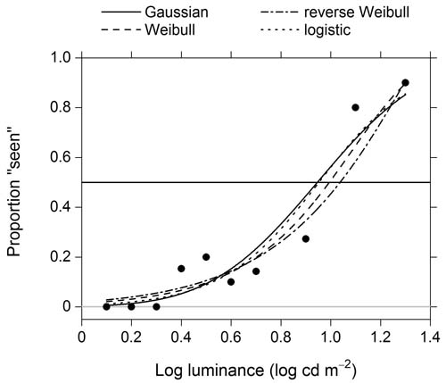
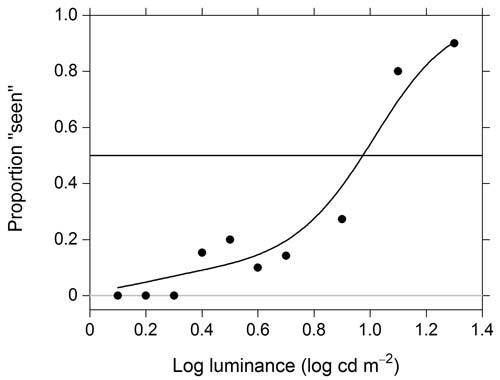

Model-free estimation of a psychometric function |
|
|---|---|
| Home | Downloads | Demonstration | Documentation | Examples | Functions | Contacts |
|---|
A subject's response to the strength of a stimulus is described by the psychometric function, from which summary measures such as a threshold or slope may be derived. Traditionally, this function is estimated by fitting a parametric model to the experimental data, usually the proportion of successful trials at each stimulus level. Common models include the Gaussian, Weibull, and reverse Weibull cumulative distribution functions, as shown in Figure 1. This approach works well if the model is correct, but it can mislead if not. In practice, the correct model is rarely known.
  Figure 1. Parametric fits Figure 2. A non-parametric fit Here, a non-parametric approach is made available based on local linear fitting. Because no assumption is made about the shape of the true function underlying the experimental data, except its smoothness, fitting may be regarded as model-free for psychophysical purposes. A non-parametric fit is shown in Figure 2.
The approach is described in detail in Żychaluk, K. and Foster, D. H. “Model-free estimation of the psychometric function”, Attention, Perception, & Psychophysics, 2009, 71 (6), 1414–1425. Download PDF.
Two packages are available, one for MATLAB (The Mathworks, Inc., Natick, MA, http://www.mathworks.co.uk/index.html) and the other for R (http://www.r-project.org/), as detailed under Downloads.
For further details, see Documentation concerning usage, Examples of applications, and Functions used in the two packages. A demonstration of the MATLAB package is available here.
If you use these images, please cite the source publication in full: Żychaluk, K. and Foster, D. H. “Model-free estimation of the psychometric function”, Attention, Perception, & Psychophysics, 2009, 71 (6), 1414–1425. Download PDF
Details of local linear fitting and descriptions of Examples can be found in the following articles:
- Żychaluk, K. and Foster, D. H. “Model-Free estimation of the psychometric function”, Attention, Perception, & Psychophysics, 2009, 71 (6), 1414–1425. Download PDF.
- Foster, D. H. and Żychaluk, K. “Nonparametric estimates of biological transducer functions”, IEEE Signal Processing Magazine, 2007, 24(4), 49–58. Download PDF.
PDFs are made available under the condition that they are for personal research only.
This work was supported by the EPSRC (grant no. EP/C003470/1) and the BBSRC (grant no. S08656).
Correspondence concerning this work may be directed to K. Żychaluk, Division of Statistics and Probability, Department of Mathematical Sciences, University of Liverpool, Mathematical Sciences Building, Peach Street, Liverpool L69 7ZL, England (email: kamila.zychaluk@liverpool.ac.uk) or to D. H. Foster, School of Electrical and Electronic Engineering, University of Manchester, Sackville Street Building, Manchester M60 1QD, England (email: d.h.foster@manchester.ac.uk).
Please contact us if you find any errors or missing links, or you have suggestions for improving the site Contacts.
This web site was developed by Iván Marín-Franch.